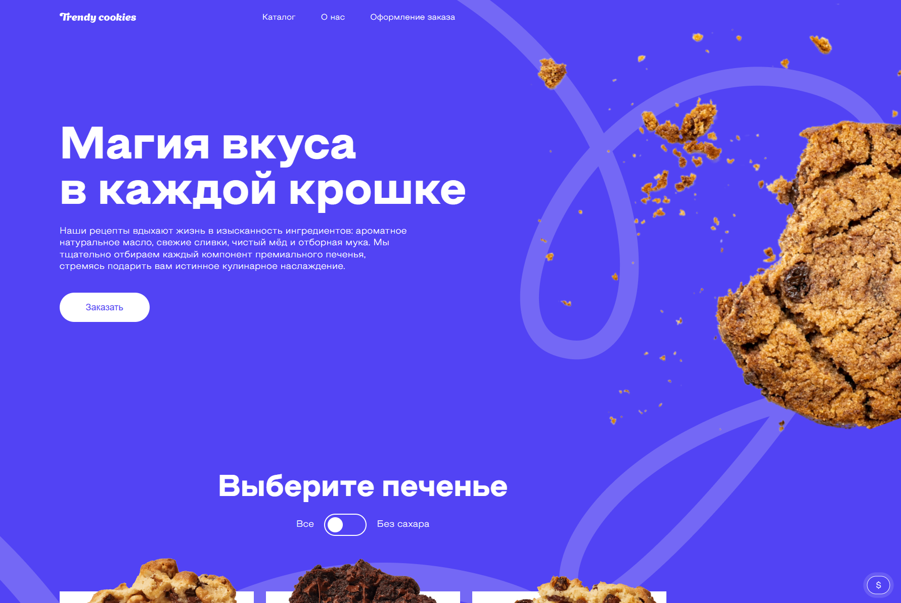

SPA приложение "Cookies"
Разработка адаптивного лендинга с каталогом продукции. Реализована фильтрация товаров, mobile-first верстка (CSS Grid, Flexbox, CSS-переменные) с упором на семантическую структуру, кроссбраузерную совместимость и доступность интерфейса (a11y).
Смотреть на GitHub →